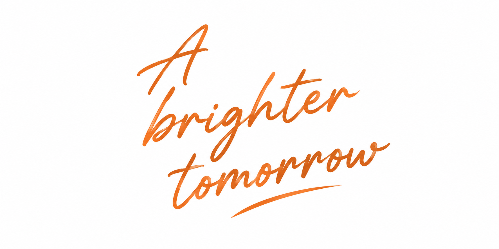
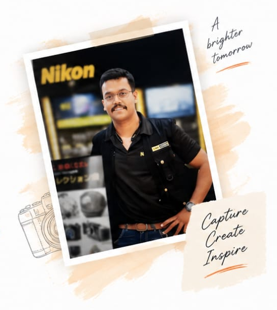

The Anish Jadhav Memorial Foundation was established in loving memory of Anish, the beloved son of Brigadier Kishor and Mrs. Neeta Jadhav.
A life that touched many,
continues to inspire
millions.
ANISH'S JOURNEY
Anish was a bright, deeply compassionate, and multitalented young man who left a lasting impression on everyone he met before his passing at the age of twenty-five. Academically gifted, he graduated with a BBA in Marketing and earned the "Best Project of the College" award for his insightful comparative study, "Marketing Strategies of Nikon vs Canon." His passion and disciplined self-learning led him to master professional photography, paving the way for a remarkable achievement: being selected for Nikon India Ltd.’s Core Technical Team.
This prestigious role was typically reserved for film institute graduates with advanced training in cinematography, yet Anish stood out for his exceptional technical competence, interpersonal warmth, and natural ability to connect with people. In this position, he conducted nationwide photography workshops, demonstrated cutting-edge camera technologies, and supported major promotional initiatives. Outside of his professional life, Anish loved playing the guitar, and his cheerful, outgoing nature, quick humor, and genuine kindness earned him a wide, cherished circle of friends. Though his life was brief, his dream, spirit, and legacy continue to inspire those who knew him.

Excelled in academics and developed a curiosity for learning and exploring new ideas.
A gifted photographer who saw the world through a unique and creative lens.
Associated with Nikon India Ltd., where his talent and dedication were truly recognized.
Supported education, conducted workshops and inspired young minds to learn big.
He cared deeply for people and believed in making a difference.
He valued knowledge and supported learning for all.
His creativity and passion inspired everyone around him.
A natural leader who motivated and empowered others.
Anish Jadhav Memorial Foundation is proud to partner with to empower youth through industry-relevant education, technology and career-focused learning.
Explore Our PartnershipWorking together for a brighter tomorrow.
Building practical skills for real opportunities.
Hands-on learning for future careers.
Creating pathways to meaningful growth.
Young minds encouraged to dream bigger.
Meaningful initiatives across communities.
Collaborating for wider impact.
Workshops, sessions and community activities.